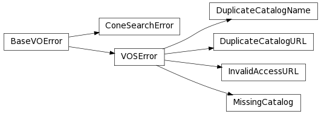
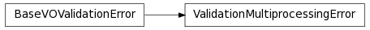

VO Simple Cone Search¶
Astropy offers Simple Cone Search Version 1.03 as defined in IVOA Recommendation (February 22, 2008). Cone Search queries an area encompassed by a given radius centered on a given RA and DEC and returns all the objects found within the area in the given catalog.
Default Cone Search Services¶
Currently, the default Cone Search services used are a subset of those found in the STScI VAO Registry. They were hand-picked to represent commonly used catalogs below:
- 2MASS All-Sky
- HST Guide Star Catalog
- SDSS Data Release 7
- SDSS-III Data Release 8
- USNO A1
- USNO A2
- USNO B1
This subset undergoes daily validations hosted by STScI using Validation for Simple Cone Search. Those that pass without critical warnings or exceptions are used by Simple Cone Search by default. They are controlled by astropy.vo.Conf.conesearch_dbname:
- 'conesearch_good' Default. Passed validation without critical warnings and exceptions.
- 'conesearch_warn' Has critical warnings but no exceptions. Use at your own risk.
- 'conesearch_exception' Has some exceptions. Never use this.
- 'conesearch_error' Has network connection error. Never use this.
If you are a Cone Search service provider and would like to include your service in the list above, please open a GitHub issue on Astropy.
Caching¶
Caching of downloaded contents is controlled by astropy.utils.data. To use cached data, some functions in this package have a cache keyword that can be set to True.
Getting Started¶
This section only contains minimal examples showing how to perform basic Cone Search.
>>> from astropy.vo.client import conesearch
List the available Cone Search catalogs:
>>> conesearch.list_catalogs()
[u'Guide Star Catalog 2.3 1',
u'SDSS DR7 - Sloan Digital Sky Survey Data Release 7 1',
u'SDSS DR7 - Sloan Digital Sky Survey Data Release 7 2',
u'SDSS DR7 - Sloan Digital Sky Survey Data Release 7 3',
u'SDSS DR7 - Sloan Digital Sky Survey Data Release 7 4',
u'SDSS DR8 - Sloan Digital Sky Survey Data Release 8 1',
u'SDSS DR8 - Sloan Digital Sky Survey Data Release 8 2',
u'The HST Guide Star Catalog, Version 1.1 (Lasker+ 1992) 1',
u'The HST Guide Star Catalog, Version 1.2 (Lasker+ 1996) 1',
u'The HST Guide Star Catalog, Version GSC-ACT (Lasker+ 1996-99) 1',
u'The PMM USNO-A1.0 Catalogue (Monet 1997) 1',
u'The USNO-A2.0 Catalogue (Monet+ 1998) 1',
u'Two Micron All Sky Survey (2MASS) 1',
u'Two Micron All Sky Survey (2MASS) 2',
u'USNO-A2 Catalogue 1',
u'USNO-A2.0 1']
Select a 2MASS catalog from the list above that is to be searched:
>>> my_catname = 'Two Micron All Sky Survey (2MASS) 1'
Query the selected 2MASS catalog around M31 with a 0.1-degree search radius:
>>> from astropy.coordinates import SkyCoord
>>> from astropy import units as u
>>> c = SkyCoord.from_name('M31')
>>> c.ra, c.dec
(<Longitude 10.6847083 deg>, <Latitude 41.26875 deg>)
>>> result = conesearch.conesearch(c, 0.1 * u.degree, catalog_db=my_catname)
Trying http://wfaudata.roe.ac.uk/twomass-dsa/DirectCone?DSACAT=TWOMASS&...
Downloading ...
WARNING: W06: ... UCD has invalid character '?' in '??' [...]
WARNING: W50: ... Invalid unit string 'yyyy-mm-dd' [...]
WARNING: W50: ... Invalid unit string 'Julian days' [...]
>>> result
<Table rows=2008 names=('cx','cy', ...>
>>> result.url
u'http://wfaudata.roe.ac.uk/twomass-dsa/DirectCone?DSACAT=TWOMASS&DSATAB=twomass_psc&'
Get the number of matches and returned column names:
>>> result.array.size
2008
>>> result.array.dtype.names
('cx',
'cy',
'cz',
'htmID',
'ra',
'dec', ...,
'coadd_key',
'coadd')
Extract RA and DEC of the matches:
>>> result.array['ra']
masked_array(data = [10.620983 10.672264 10.651166 ..., 10.805599],
mask = [False False False ..., False],
fill_value = 1e+20)
>>> result.array['dec']
masked_array(data = [41.192303 41.19426 41.19445 ..., 41.262123],
mask = [False False False ..., False],
fill_value = 1e+20)
Using astropy.vo¶
This package has four main components across two subpackages:
They are designed to be used in a work flow as illustrated below:

The one that a typical user needs is the Simple Cone Search component (see Cone Search Examples).
See Also¶
Reference/API¶
astropy.vo Module¶
The vo subpackage provides virtual observatory (VO) related functionality.
Classes¶
| Conf | Configuration parameters for astropy.vo. |
astropy.vo.client.vos_catalog Module¶
Common utilities for accessing VO simple services.
Functions¶
| get_remote_catalog_db(dbname[, cache, verbose]) | Get a database of VO services (which is a JSON file) from a remote location. |
| call_vo_service(service_type[, catalog_db, ...]) | Makes a generic VO service call. |
| list_catalogs(service_type[, cache, verbose]) | List the catalogs available for the given service type. |
Classes¶
| VOSBase(tree) | Base class for VOSCatalog and VOSDatabase. |
| VOSCatalog(tree) | A class to represent VO Service Catalog. |
| VOSDatabase(tree) | A class to represent a collection of VOSCatalog. |
astropy.vo.client.conesearch Module¶
Support VO Simple Cone Search capabilities.
Functions¶
| conesearch(center, radius[, verb]) | Perform Cone Search and returns the result of the first successful query. |
| search_all(*args, **kwargs) | Perform Cone Search and returns the results of all successful queries. |
| list_catalogs(**kwargs) | Return the available Cone Search catalogs as a list of strings. |
| predict_search(url, *args, **kwargs) | Predict the run time needed and the number of objects for a Cone Search for the given access URL, position, and radius. |
| conesearch_timer(*args, **kwargs) | Time a single Cone Search using astropy.utils.timer.timefunc with a single try and a verbose timer. |
Classes¶
| AsyncConeSearch(*args, **kwargs) | Perform a Cone Search asynchronously and returns the result of the first successful query. |
| AsyncSearchAll(*args, **kwargs) | Perform a Cone Search asynchronously, storing all results instead of just the result from first successfull query. |
astropy.vo.client.async Module¶
Asynchronous VO service requests.
Classes¶
| AsyncBase(func, *args, **kwargs) | Base class for asynchronous VO service requests using concurrent.futures.ThreadPoolExecutor. |
astropy.vo.client.exceptions Module¶
Exceptions related to Virtual Observatory (VO).
Classes¶
| BaseVOError | Base class for VO exceptions. |
| VOSError | General VO service exception. |
| MissingCatalog | VO catalog is missing. |
| DuplicateCatalogName | VO catalog of the same title already exists. |
| DuplicateCatalogURL | VO catalog of the same access URL already exists. |
| InvalidAccessURL | Invalid access URL. |
| ConeSearchError | General Cone Search exception. |
Class Inheritance Diagram¶

astropy.vo.validator Module¶
Classes¶
| Conf | Configuration parameters for astropy.vo.validator. |
Class Inheritance Diagram¶

astropy.vo.validator.validate Module¶
Validate VO Services.
Functions¶
| check_conesearch_sites(*args, **kwargs) | Validate Cone Search Services. |
astropy.vo.validator.inspect Module¶
Inspect results from astropy.vo.validator.validate.
Classes¶
| ConeSearchResults([cache, verbose]) | A class to store Cone Search validation results. |
astropy.vo.validator.exceptions Module¶
Exceptions related to Virtual Observatory (VO) validation.
Classes¶
| BaseVOValidationError | Base class for VO validation exceptions. |
| ValidationMultiprocessingError | Validation using multiprocessing failed. |
Class Inheritance Diagram¶
